No. 02 — Modeling
Fit · Print · Runway
More than fifteen years as a working model. Fit modeling is the heart of her career, for major fashion brands at home and overseas in China, alongside print, runway shows across the United States, and hand and foot modeling.


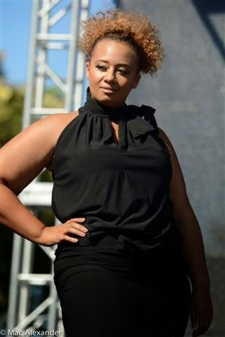
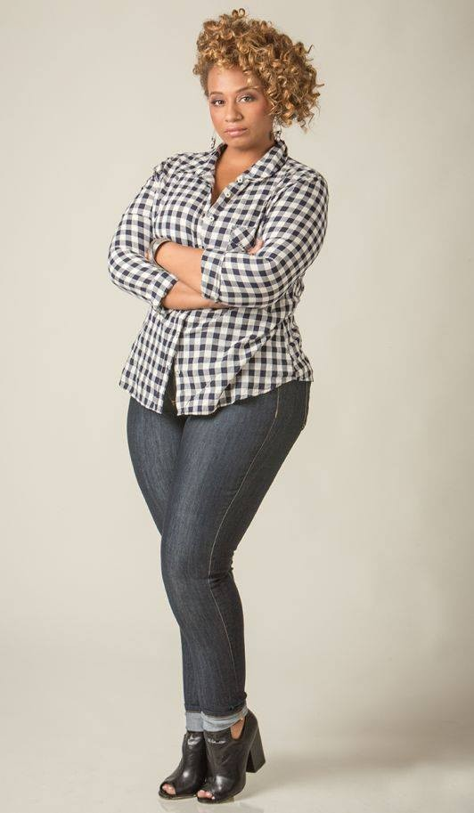


FitFit modeling for major fashion brands, including overseas in China.
PrintEditorial, commercial, and curve print work.
RunwayRunway shows and events across the United States.
Hand & FootParts modeling for hands and feet.
Runway

On the runway · Modern Day Wives show


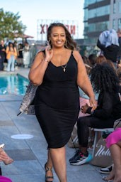
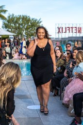


Runway Coaching
Own the Runway
With more than fifteen years of runway experience, Misty coaches and mentors models at every level, helping each one find their walk, their presence, and the confidence to own the room. She coaches the models for the Modern Day Wives runway show.
Book a Coaching SessionCoaching rehearsal · Modern Day Wives show
Portfolio

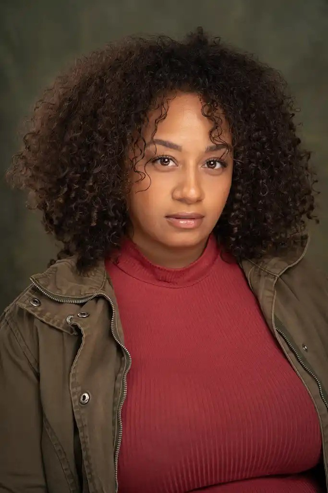


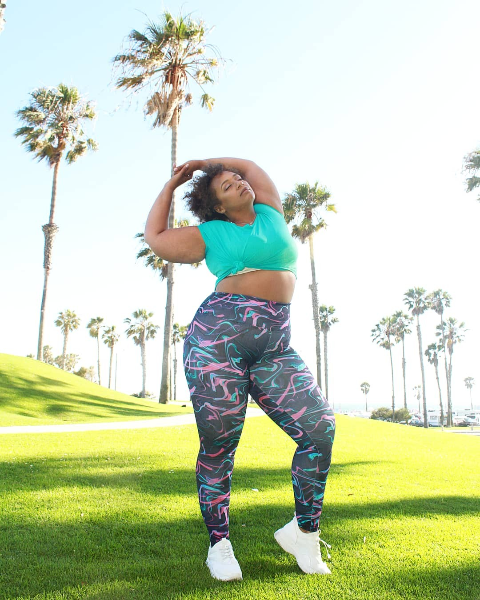
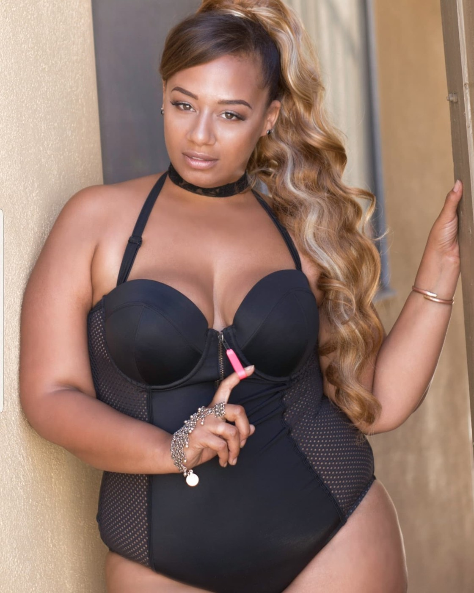


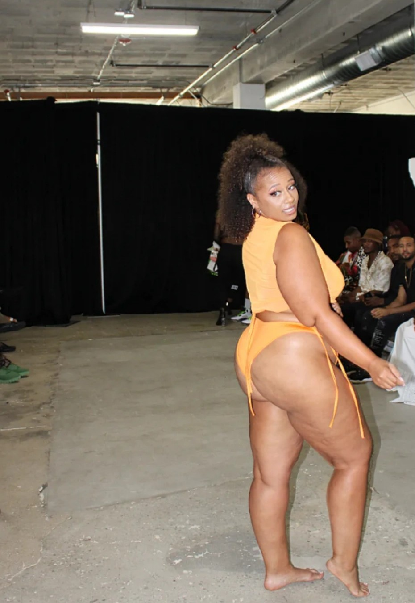


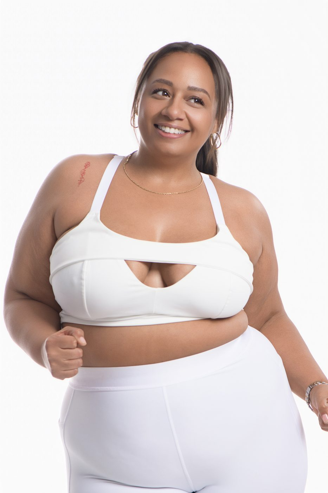
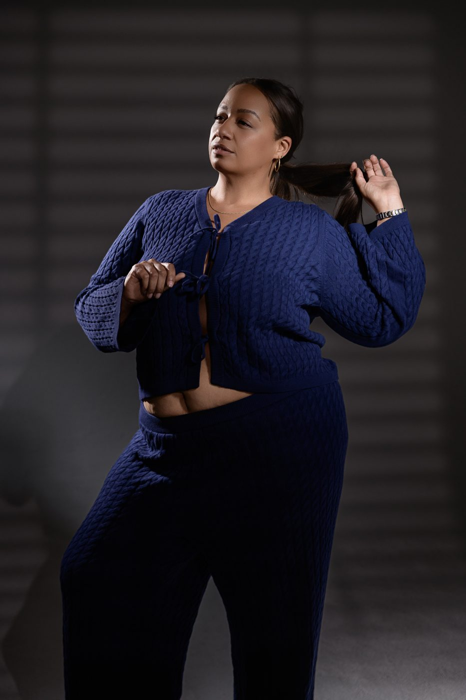


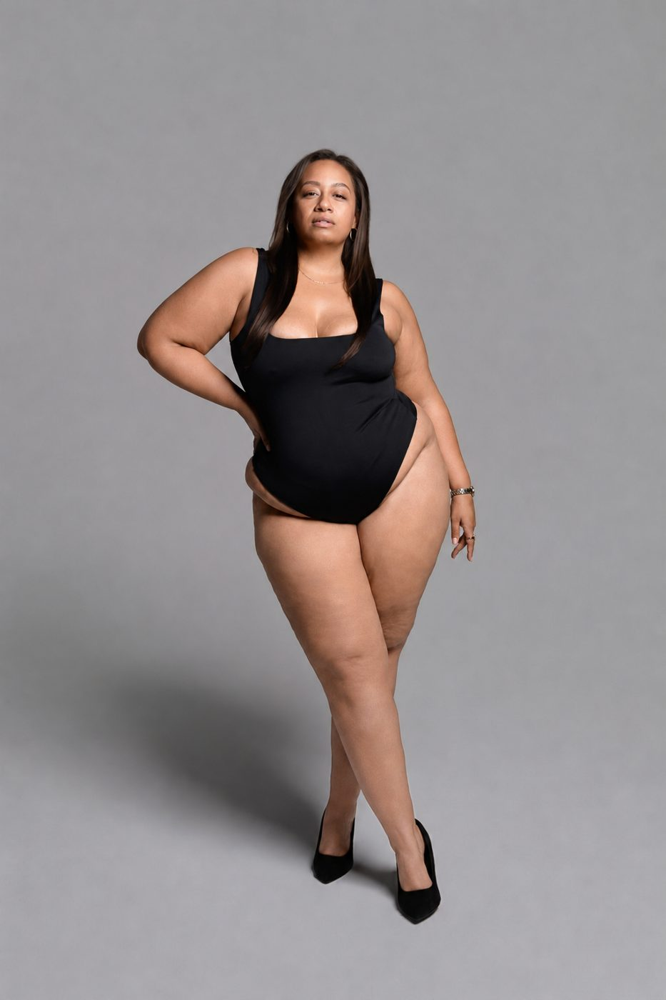
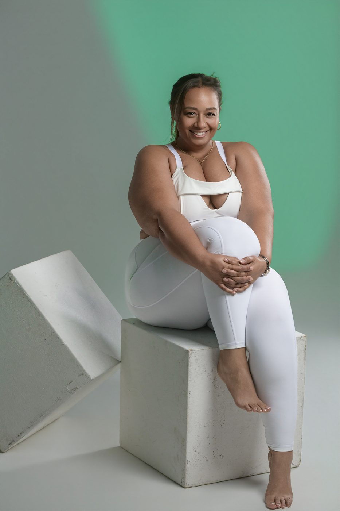


Where it all started


Let’s work together.
Book Misty